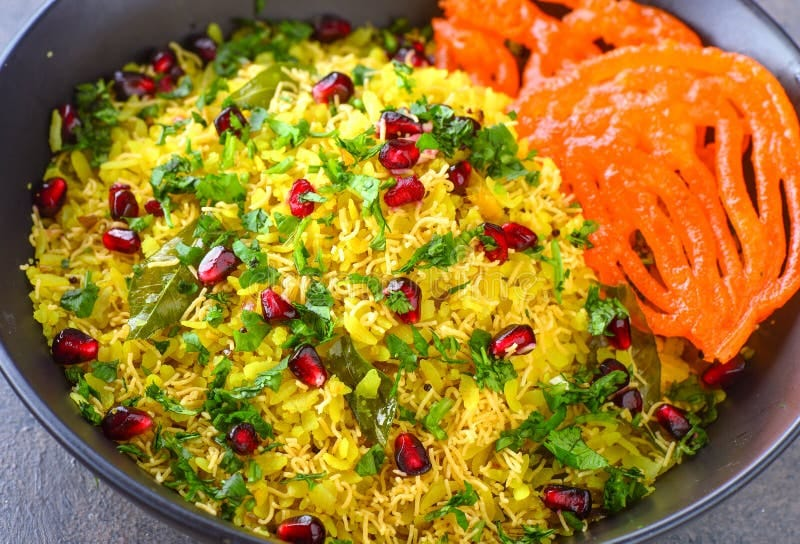

MADHYA PRADESH üôèüíñSPACIAL DISHüíñüôè

Poha-jalebi:- is a beloved breakfast combination that truly captures the spirit of Madhya Pradesh. The soft, flavorful poha, garnished with fresh coriander, sev, and a squeeze of lemon, pairs perfectly with the sweet, crispy jalebi, creating a unique harmony of taste. This dish is not just food—it’s an emotion for locals, often enjoyed with a hot cup of tea on bustling street corners. Whether it’s a regular morning or a festive occasion, poha-jalebi brings people together, reflecting the warmth and hospitality of the region. Its simplicity, affordability, and unforgettable taste make it truly.
मध्य प्रदेश की बोली में पोहा-जलेबी की खास बात
"अरे भिया, इंदौर आके पोहा-जलेबी ना खाए, तो का खाए! ई तो हमरे यहां के सवेरे की शान है। गरमागरम पोहा ऊपर से हरी धनिया, नींबू अउर सेव, संग में मीठी कुरकुरी जलेबी—मुँह में घुल जाए। चाय की चुस्की के साथ जब ये नाश्ता मिल जाए, समझो दिन बन गया।
हमरे इंदौर, उज्जैन, भोपाल में तो हर नुक्कड़ पे पोहा-जलेबी की खुशबू बसी है। चाहे त्योहार हो या कोई खास मौका, पोहा-जलेबी बिना मजा अधूरा। इहाँ के लोग कहें—'पोहा-जलेबी खाओ, दिल से मुस्काओ!'"
Dal Bafla:- The Heart of Madhya Pradesh Cuisine
Dal Bafla is a traditional and much-loved delicacy from Madhya Pradesh, often considered a culinary symbol of the region. This dish is a testament to the state’s rich food culture, blending rustic flavors with wholesome nutrition. Dal Bafla consists of two main components: “bafla,” a type of wheat flour dumpling, and “dal,” a spiced lentil preparation.
The Making of Bafla
Bafla is made by kneading wheat flour with ghee, yogurt, and a pinch of spices. The dough is shaped into round balls and first boiled in water until they float to the surface, indicating they are cooked through. The boiled baflas are then roasted or baked, often over a traditional coal fire or in a tandoor, until the outer layer becomes crisp and golden brown. This dual cooking process gives bafla its characteristic texture—soft and fluffy inside, with a slightly crunchy exterior.
Dal: The Perfect Companion
The dal served with bafla is typically made from yellow split pigeon peas (toor dal) or a mix of lentils. It is tempered with cumin, mustard seeds, garlic, ginger, and a variety of aromatic spices. The dal is hearty, flavorful, and complements the mildly spiced bafla perfectly.
Serving Style and Tradition
Dal Bafla is traditionally served with generous dollops of ghee poured over the hot baflas, enhancing their flavor and richness. It is often accompanied by a tangy coriander chutney, spicy pickles, and sometimes a sweet dessert like laddoo, making it a complete meal. The dish is especially popular during festivals, weddings, and special gatherings, reflecting the region’s hospitality and love for robust flavors.

Indori Khopra:-Indori Khopra Patties are a famous and beloved street food from Indore, Madhya Pradesh, known for their unique combination of crispy texture and flavorful stuffing. The word "Khopra" means dried coconut in Hindi, and these patties are essentially deep-fried potato croquettes stuffed with a delicious mixture of grated coconut, spices, nuts, and dried fruits. This blend gives the patties a perfect balance of sweet, spicy, and tangy flavors.
The preparation starts with boiling and mashing potatoes, which are then mixed with corn flour (or arrowroot flour during fasting) and seasoning to form a smooth dough. The stuffing is made by combining grated coconut with chopped cashews, raisins, green chili, ginger, coriander, lemon juice, sugar, and various spices like black pepper and red chili powder. This stuffing is placed inside flattened portions of the potato dough, which are carefully sealed and shaped into round patties.
Before frying, the patties are refrigerated for about 20 minutes to help them hold their shape and avoid breaking in the hot oil. They are then deep-fried until golden brown and crispy on the outside, while remaining soft and flavorful inside. Indori Khopra Patties are traditionally served hot with green chutney and tamarind chutney, which add freshness and tanginess to the dish.